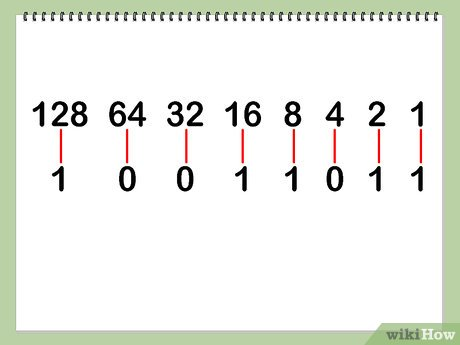

ASCII-tabel
De naam ASCII-tabel staat voor: American Standard Code for Information Interchange. Het is een wereldwijde regel voor alle cijfers, letters en andere leestekens. Elke letter krijgt namelijk zijn eigen code. In totaal zijn er 2⁸ = 256 verschillende binaire codes te maken.
Klik hier om binairy bonanza te spelen. In dit plaatje zie je het binair stelsel elke plek van 0 of 1 heeft dus een vaste waarden. Bij 0 doet het getal niet mee bij 1 wel en wat je dan doe als je wilt tellen dan tel je elke die aan staat bij elkaar op dus de enen .